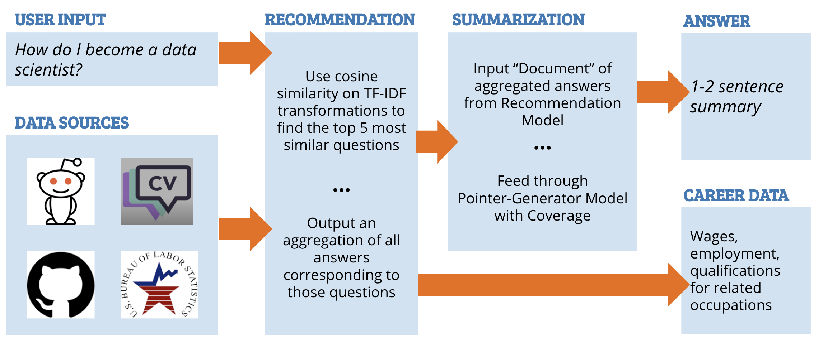
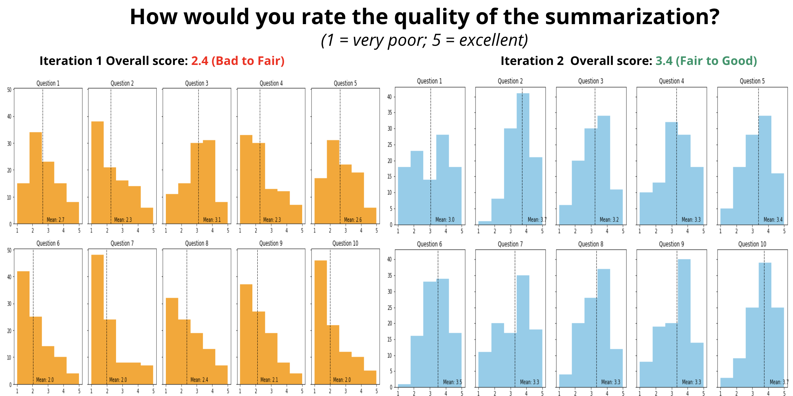
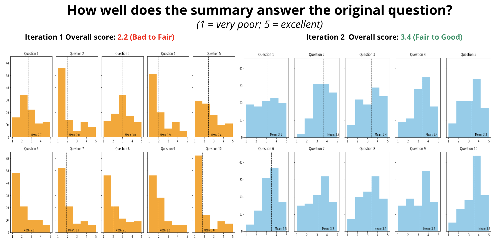

CARS uses a corpus of real-world career-related questions and answers to provide advice to jobseekers based on their queries.
There are a huge number of websites offering information about job search. These range from job boards that provide listings like Indeed, to sites hosting discussion and reviews like CareerVillage and Glassdoor, to sites with data on current labor market conditions like the Bureau of Labor Statistics site. While this wealth of information is very valuable, it can also be overwhelming for jobseekers.
We want to bring together useful information for jobseekers, primarily by synthesizing advice relevant to their career goals. We used a dataset of career-related questions and answers from CareerVillage.com supplemented with scraped threads from reddit.com/r/careerguidance. Given these data sources, we built a recommendation model to select the set of questions in our corpus that are most similar to a user's query. We then feed the results of this model into a summarization model that condenses the answers to those questions into a digestible form for users
Here's what a user sees after submitting a query:

We also infer which Bureau of Labor Statistics occupations are most relevant to a user's query, and display a small dashboard of statistics about that and related occupations.

Our recommendation model uses a TF-IDF vectorizer to embed the text of the questions we have in our corpus, then applies an additional weighting for the names of occupations in the Bureau of Labor Statistics Standard Occupation Code (SOC) classifications. We then use cosine similarity to evaluate the similarity of the questions.
Our summarization model utilizes a pointer-generator with coverage framework adapted from See et. al, “Get To The Point: Summarization with Pointer-Generator Networks”. The "pointer" portion of the model is extractive, pulling important snippets from the corpus of documents it is summarizing. The "generator" portion of the model is abstractive, creating new text based on the content of documents. The "coverage" portion of the model minimizes repetition by scanning over the output of the first two portions and eliminating redundancy.
Why use the pointer-generator model with coverage? The structure of the Q&A responses makes traditional extractive models less effective since key points can occur anywhere in the document. Responses between different users may also repeat the same points multiple times. Because of this, we need to apply coverage to make sure responses are not repetitive. In addition, Q&A responses may utilize industry vernacular, which may not appear in the abstractive vocabulary. This means we need extractive document context.
The summarization model was trained for a total of 124 hours on a combined corpus of our Q&A documents as well as the CNN/Daily News Dataset.
We conducted two Qualtrics surveys asking users to rate the quality of our summarizations for 10 example questions. In our first iteration, the results were poor on average, so we conducted additional training of the summarization model and subsequently improved our average scores by 1 point out of 5.
 Our solution is able to synthesize a large corpus of career advice into helpful respones for users (though evaluators only rated the responses "good" on average). We believe that with additional iteration and a larger corpus of questions and answers, this framework could provide a useful tool for jobseekers looking to take the next step in their careers.